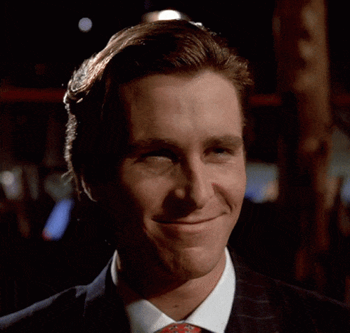

Интересна Страница
Мисля че
Youtube трябва да бъде заместен от
Odysee
понеже хората не могат да казват собствените си мнения без да получат незаслужени последствия,
Ютуб е станал твърде корпоративен.
Мойте любими Ютубари са
Fun fact: обичам да КОНСУМИРАМ кондензирано мляко
